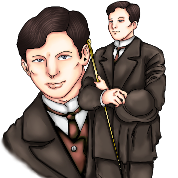

☰ open
Erehe at Pilibustero
Ang Buod:
Nagpatuloy si Crisostomo sa kanyang paglalakbay. Sa paglalakad nito, napansin niyang halos walang pagbabago sa Maynila sa loob ng kaniyang pitong taong pamamalagi sa Europa. Inilaan niya ang kanyang atensyon sa paligid, nagmasid-masid sa kanyang kapaligiran, habang iniisip ang mga alaala niya sa lugar na yun. Habang pinagninilayan niya ito, lumapit si Tenyente Guevarra. Pinaalalahanan siya nito na mag-ingat. Mula sa paglalahad ng matandang tenyente. Naisalaysay din ni Tinyente Guevarra ang tungkol sa kanyang ama at ang mapait na sinapit nito. Ayon sa tenyente, may isang grupo ng mga bata na sinigawan ng Kastila. Ipinagtanggol ito ni Don Rafael ang isang bata sa pananakit ng Kastilang tagasingil ng buwis. Akmang tatadyakan ng Kastila ang bata ngunit tinabig ito ng ama ni Crisostomo na naging dahilan ng pagkabuwal ng tagapaningil. Tumama ang ulo nito sa isang bato na naging dahilan ng kaniyang pagkamatay. Dahil sa pangyayaring ito nabilanggo si Don Rafael. Sinamantala ito ng mga naiinggit at may galit sa ama ni Crisostomo at isa na rito si Padre Damaso. Pinaratangan ng pari na erehe si Don Rafael dahil sa hindi ito nangungumpisal.
Ipinahayag ng tenyente ang kaniyang pagsisikap upang mapalaya ang ama ng binata ngunit naging mahirap ito. Sa kabila ng mga pagsubok, hindi sumuko si Tenyente Guevarra sa pagtatanggol at pagmamalasakit kay Don Rafael, ngunit nang malapit nang makalaya ang huli, siya naman nitong pagkamatay sa bilangguan. Sa puntong iyon, nagpaalam ang tenyente at pumara ng nagdaraang karwahe.